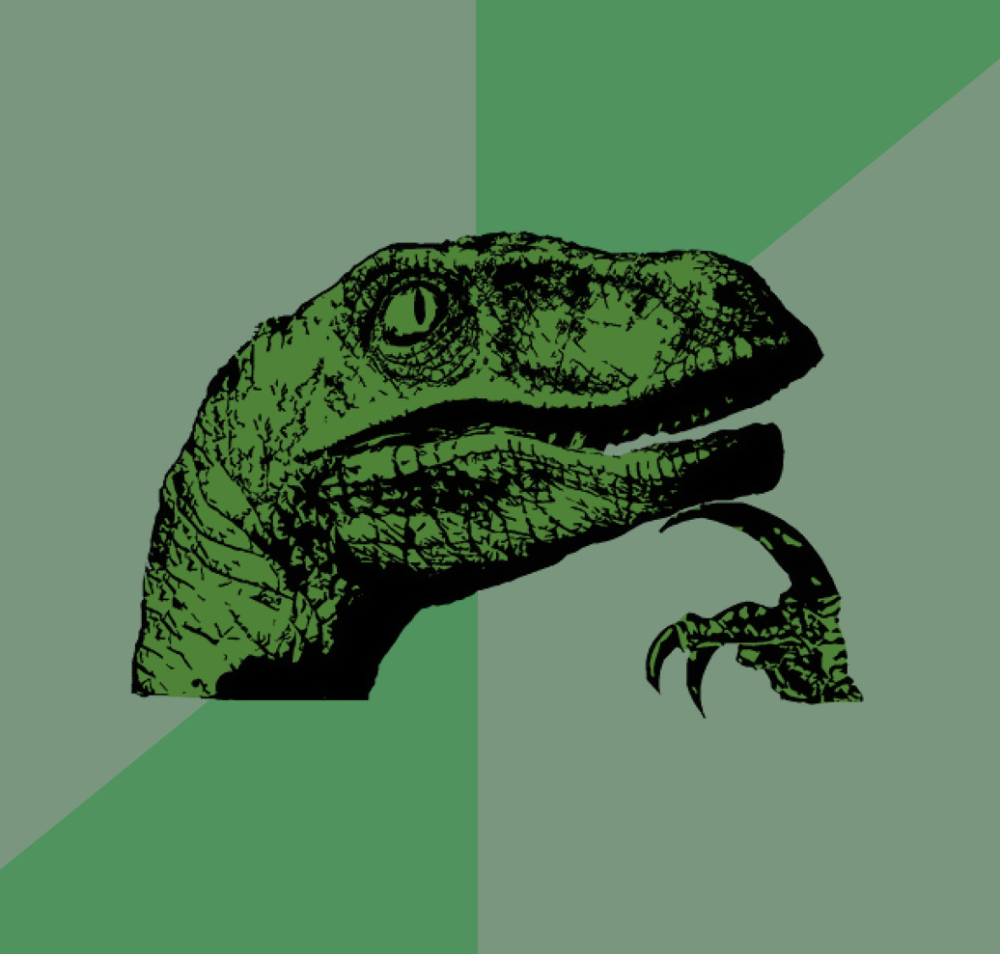

CSS Beyond Breakpoints
Design und Layout ohne Breakpoints, dafür mit modernem CSS
Thomas Puppe
Hi, ich bin Thomas üëã
Senior Frontend Developer
bei der ZEIT
#a11y, #leanweb, #webperf
CSS Beyond Breakpoints
Design und Layout ohne Breakpoints, dafür mit modernem CSS.
CSS Vars: Colors
Dark Mode fr√ºher ü¶£
body {
background: white;
color: black;
}
@media (prefers-color-scheme: dark) {
.body {
background: black;
color: white;
}
}
CSS Vars: Colors
Dark Mode mit CSS Vars üêò
:root {
--z-ds-color-text-100: #252525; // Primary Information
--z-ds-color-text-70: #444; // Secondary Information
--z-ds-color-text-40: #999; // Low Prio
--z-ds-color-background-0: #fff; // Primary
}
:root {
@media (prefers-color-scheme: dark) {
--z-ds-color-text-100: #fff;
--z-ds-color-text-70: #bababa;
--z-ds-color-text-40: #8b8b8b;
--z-ds-color-background-0: #121212;
}
}
body {
background: var(--z-ds-color-background-0);
color: var(--z-ds-color-text-100);
}
CSS Vars: Colors mit CSS Functions
Dark Mode mit light-dark() ü¶Ñ
:root {
color-scheme: light dark;
--z-ds-color-text-100: light-dark(#252525, #fff); // Primary Information
--z-ds-color-text-70: light-dark(#444, #bababa); // Secondary Information
--z-ds-color-text-40: light-dark(#999, #8b8b8b); // Low Prio
--z-ds-color-background-0: light-dark(#fff, #121212); // Primary
}
body {
background: var(--z-ds-color-background-0);
color: var(--z-ds-color-text-100);
}
CSS Vars: Font Sizes
--zeit-fontsize-s: 1rem;
--zeit-fontsize-m: 1.25rem;
--zeit-fontsize-l: 1.5rem;
@media (min-width: 600px) {
--zeit-fontsize-m: 1.5rem;
--zeit-fontsize-l: 2rem;
}
.zon-teaser h2 {
font-size: var(--zeit-fontsize-m);
}
.zon-teaser--large h2 {
font-size: var(--zeit-fontsize-l);
}
Breakpoints für Font Sizes

Breakpoints für Font Sizes
CSS `clamp()` ü¶Ñ
font-size: clamp(1.25rem, 2vw + 1rem, 2.5rem);
clamp(): Mathematische CSS-Funktion mit sehr gutem Browser-Support.
Bevorzugter Wert: Idealer Wert der Schriftgröße. Wächst mit dem Bildschirm (2vw) und berücksichtigt die User-Einstellungen (1rem).
Minimaler Wert: Untere Grenze. Wird genommen, wenn der ideale Wert drunter fällt.
Maximaler Wert: Obere Grenze. Wird genommen, wenn der ideale Wert größer ist.
CSS Vars: Font Sizes
Font Sizes mit `clamp()` ü¶Ñ
--zeit-fontsize-2: clamp(1rem, 1.2vw + 0.8rem, 2rem);
--zeit-fontsize-m: clamp(1.25rem, 2vw + 1rem, 5rem);
--zeit-fontsize-xl: clamp(2rem, 4vw + 1rem, 6rem);
p {
font-size: var(--zeit-fontsize-m);
}
h1 {
font-size: var(--zeit-fontsize-xl);
}
CSS Vars: Spacing
Spacing mit `clamp()` ü¶Ñ
--zeit-space-s: 0.5rem;
--zeit-space-l: clamp(1rem, 1.2vw + 0.8rem, 2rem);;
--zeit-space-xl: clamp(2rem, 4vw + 1rem, 6rem);
h1 {
margin-block: var(--zeit-space-xl);
}
h2 {
margin-block: var(--zeit-space-l);
}
p {
margin-block: var(--zeit-space-s);
}
Spacing mit relativen Einheiten ü¶Ñ
h1, h2 {
margin-block: 2em;
margin-block: 2lh;
}
h1, h2 {
margin-inline: min(5ch, 2vi);
margin-block: round(up, 2vb, 1lh);
}
@supports (font-size: 1cqi) {
font-size: clamp(rem(82px), 8.2cqi, rem(164px));
}
p:not([class]) {
max-width: min(70ch, 100% - 4rem);
}
"Be the browser's mentor,
not it's micromanager."
Breakpoints ü¶£
.container > * {
width: 100%;
}
@media (min-width: 600px) {
width: 45%;
margin: 5%;
}
@media (min-width: 900px) {
width: 30%;
margin: 3%;
}
Grid üêò
.product-gallery {
display: grid;
gap: 2vw;
grid-template-columns: 1fr;
}
@media (min-width: 600px) {
grid-template-columns: repeat(2, 1fr);
}
@media (min-width: 900px) {
grid-template-columns: repeat(3, 1fr);
}
Auto-Grid ü¶Ñ
.product-gallery {
display: grid;
grid-template-columns: repeat(auto-fit, minmax(250px, 1fr));
gap: 2rem;
}
Teaser bei ZEIT
--teaser-column-auto-width: calc(
(#{$break-tablet-min} - var(--z-gap) * 2 - var(--z-ds-space-xl)) / 2
);
display: grid;
gap: var(--z-ds-space-m) var(--z-ds-space-xl);
grid-template-columns: repeat(
auto-fit,
minmax(min(100%, var(--teaser-column-auto-width)), 1fr)
);
// see https://kulturbanause.de/blog/css-grid-auto-fill-responsive-layouts-ohne-media-queries/
CSS Beyond Breakpoints
Fazit
CSS Beyond Breakpoints
Responsives Web Design
↓
Intrinsisches Web Design
"Be the browser's mentor,
not it's micromanager."